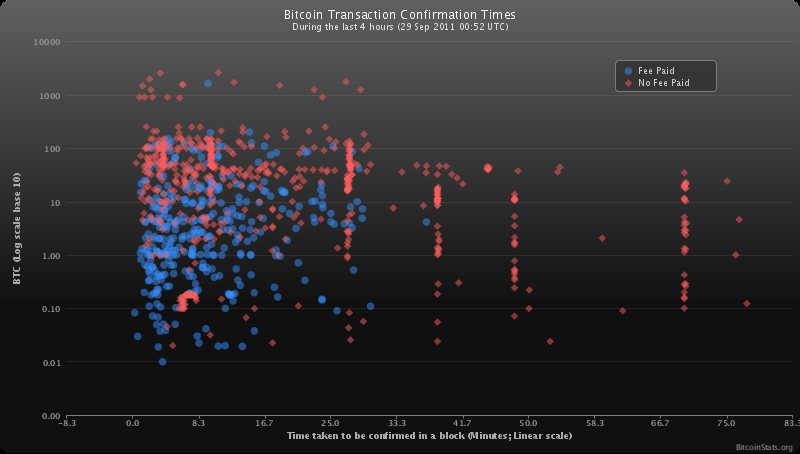

Here you will find answers to the most commonly asked questions.
General
What is Bitcoin?
Bitcoin is a distributed peer-to-peer digital currency that can be transferred instantly and securely between any two people in the world. It's like electronic cash that you can use to pay friends or merchants.
What are bitcoins?
Bitcoins are the unit of currency of the Bitcoin system. A commonly used shorthand for this is “BTC” to refer to a price or amount (e.g. “100 BTC”). There are such things as physical bitcoins, but ultimately, a bitcoin is just a number associated with a Bitcoin Address. A physical bitcoin is simply an object, such as a coin, with the number carefully embedded inside. See also an easy intro to Bitcoin.
How can I get bitcoins?
There are a variety of ways to acquire bitcoins:
- Accept bitcoins as payment for goods or services.
- You can buy bitcoins from Bitit Coinbase, Cubits, CoinCorner, ?BIPS.gif BIPS Market, Circle, or Celery.
- The most common way to buy bitcoins are the ?Bitcoin Exchanges
- There are several services where you can ?trade them for traditional currency.
- You can also buy bitcoins using Bitcoin ATMs that are locally in your area.
- Find someone to trade cash for bitcoins in-person through a local directory.
- Participate in a mining pool.
- If you have a lot of mining hardware, you can solo mine and attempt to create a new block (currently yields 25 bitcoins plus transaction fees).
- Visit sites that provide ?free samples and offers.
{kind=link}
Does Bitcoin guarantee an influx of free money?
Since Bitcoin is a new technology, what it is and how it works may be initially unclear. Bitcoin is sometimes presented as being one of three things:
- Some sort of online 'get-rich-quick' scam.
- A loophole in the market economy, the installation of which guarantees a steady influx of cash.
- A sure investment that will almost certainly yield a profit.
In fact, none of the above are true. Let's look at them independently.
Is Bitcoin a 'get-rich-quick' scheme?
If you've spent much time on the Internet, you've probably seen ads for many 'get-rich-quick' schemes. These ads usually promise huge profits for a small amounts of easy work. Such schemes are usually pyramid/matrix-style schemes that make money from their own employees and offer nothing of any real value. Most convince one to buy packages that will make them earn hundreds a day, which in fact have the buyer distribute more such ads, and make minute profits.
Bitcoin is in no way similar to these schemes. Bitcoin doesn't promise windfall profits. There is no way for the developers to make money from your involvement or to take money from you. That bitcoins are nearly impossible to acquire without the owner's consent represents one of its greatest strengths. Bitcoin is an experimental, virtual currency that may succeed or may fail. None of its developers expect to get rich off of it.
A more detailed answer to this question can be found here.
Will I make money by installing the client?
Most people who use Bitcoin don't earn anything by doing so, and the default client has no built-in way to earn Bitcoins. A small minority of people with dedicated, high-performance hardware do earn some Bitcoins by "mining" (generating new bitcoins, see ?What is mining?|) with special software, but joining Bitcoin shouldn't be construed as being the road to riches. Most Bitcoin users get involved because they find the project conceptually interesting and don't earn anything by doing so. This is also why you won't find much speculation about the political or economic repercussions of Bitcoin anywhere on this site: Bitcoin developers owe their dedication to the project's intellectual yieldings more than to those of a monetary nature. Bitcoin is still taking its first baby steps; it may go on to do great things but right now it only has something to offer those chasing conceptually interesting projects or bleeding edge technology.
As an investment, is Bitcoin a sure thing?
Bitcoin is a new and interesting electronic currency, the value of which is not backed by any single government or organization. Like other currencies, it is worth something partly because people are willing to trade it for goods and services. Its exchange rate fluctuates continuously, and sometimes wildly. It lacks wide acceptance and is vulnerable to manipulation by parties with modest funding. Security incidents such as website and account compromise may trigger major sell-offs. Other fluctuations can build into positive feedback loops and cause much larger exchange rate fluctuations. Anyone who puts money into Bitcoin should understand the risk they are taking and consider it a high-risk currency. Later, as Bitcoin becomes better known and more widely accepted, it may stabilize, but for the time being it is unpredictable. Any investment in Bitcoin should be done carefully and with a clear plan to manage the risk.
Can I buy bitcoins with Paypal?
It is possible to buy physical bitcoins with PayPal but it is otherwise difficult and/or expensive to do so for non-physical bitcoins, because of significant risk to the seller.
While it is possible to find an individual who wishes to sell Bitcoin to you via Paypal, (perhaps via #bitcoin-otc ) most exchanges do not allow funding through PayPal. This is due to repeated cases where someone pays for bitcoins with Paypal, receives their bitcoins, and then fraudulently complains to Paypal that they never received their purchase. PayPal often sides with the fraudulent buyer in this case, which means any seller needs to cover that risk with higher fees or refuse to accept PayPal altogether.
Buying Bitcoins from individuals this way is still possible, but requires the seller to have some trust that the buyer will not file a claim with PayPal to reverse the payment.
Where can I find a forum to discuss Bitcoin?
Please visit the Community Portal for links to Bitcoin-related forums.
How are new bitcoins created?
New bitcoins are generated by the network through the process of "**?mining|". In a process that is similar to a continuous raffle draw, mining nodes on the network are awarded bitcoins each time they find the solution to a certain mathematical problem (and thereby create a new block). Creating a block is a proof of work with a difficulty that varies with the overall strength of the network. The reward for solving a block is automatically adjusted so that, ideally, every four years of operation of the Bitcoin network, half the amount of bitcoins created in the prior 4 years are created. A maximum of [[!template Error: failed to process template <span class="createlink"><a href="/ikiwiki.cgi?from=Help%3AFAQ&do=create&page=%2Ftemplates%2Fformatnum%3A10499889.80231183" rel="nofollow">?</a>formatnum:10499889.80231183</span> template formatnum:10499889.80231183 not found ]] bitcoins were created in the first 4 (approx.) years from January 2009 to November 2012. Every four years thereafter this amount halves, so it should be [[!template Error: failed to process template <span class="createlink"><a href="/ikiwiki.cgi?page=%2Ftemplates%2Fformatnum%3A5250000&do=create&from=Help%3AFAQ" rel="nofollow">?</a>formatnum:5250000</span> template formatnum:5250000 not found ]] over years 4-8, [[!template Error: failed to process template <span class="createlink"><a href="/ikiwiki.cgi?from=Help%3AFAQ&page=%2Ftemplates%2Fformatnum%3A2625000&do=create" rel="nofollow">?</a>formatnum:2625000</span> template formatnum:2625000 not found ]] over years 8-12, and so on. Thus the total number of bitcoins in existence can never exceed [[!template Error: failed to process template <span class="createlink"><a href="/ikiwiki.cgi?from=Help%3AFAQ&do=create&page=%2Ftemplates%2Fformatnum%3A20999839.77085749" rel="nofollow">?</a>formatnum:20999839.77085749</span> template formatnum:20999839.77085749 not found ]] and counting. See Controlled Currency Supply.
Blocks are mined every 10 minutes, on average and for the first four years ([[!template Error: failed to process template <span class="createlink"><a href="/ikiwiki.cgi?from=Help%3AFAQ&do=create&page=%2Ftemplates%2Fformatnum%3A210000" rel="nofollow">?</a>formatnum:210000</span> template formatnum:210000 not found ]] blocks) each block included 50 new bitcoins. As the amount of processing power directed at mining changes, the difficulty of creating new bitcoins changes. This difficulty factor is calculated every 2016 blocks and is based upon the time taken to generate the previous 2016 blocks. See Mining.
What's the current total number of bitcoins in existence?
Current count. Also see Total bitcoins in circulation chart
The number of blocks times the coin value of a block is the number of coins in existence. The coin value of a block is 50 BTC for each of the first [[!template Error: failed to process template <span class="createlink"><a href="/ikiwiki.cgi?from=Help%3AFAQ&do=create&page=%2Ftemplates%2Fformatnum%3A210000" rel="nofollow">?</a>formatnum:210000</span> template formatnum:210000 not found ]] blocks, 25 BTC for the next [[!template Error: failed to process template <span class="createlink"><a href="/ikiwiki.cgi?from=Help%3AFAQ&page=%2Ftemplates%2Fformatnum%3A210000&do=create" rel="nofollow">?</a>formatnum:210000</span> template formatnum:210000 not found ]] blocks, then 12.5 BTC, 6.25 BTC and so on.
How divisible are bitcoins?
A bitcoin can be divided down to 8 decimal places. Therefore, 0.00000001 BTC is the smallest amount that can be handled in a transaction. If necessary, the protocol and related software can be modified to handle even smaller amounts.
What do I call the various denominations of bitcoin?
Unlike most currencies, Bitcoin amounts are highly divisible. This has led to a desire to create names for smaller denominations of bitcoin amounts, especially since transactions involving whole bitcoins are no longer quite so common. Bitcoin is decentralized, so there is no organization that can set official names for units. Therefore, there are many different units with varying degrees of popularity. As of 2014, the most common units are bitcoins, bits, and satoshi: 1 bitcoin = 1 000 000.00 bits = 100 000 000 satoshi.
The bitcoin (abbreviated BTC or XBT) is the unit that was used in the original Bitcoin wallet software created by Satoshi Nakamoto. There is nothing particularly special about this unit, but it is by far the most common unit due to tradition.
The smallest value that the Bitcoin network supports sending is the satoshi (sometimes abbreviated sat), one hundred-millionth (0.000 000 01) of a bitcoin. In other words, the network does not support sending fractions of a satoshi. Since it is a hard limit, it seems natural to use it as a unit, though it currently has very little value. The unit was named in honor of Bitcoin's creator after he left -- he was not so vain as to name a unit after himself. The plural of satoshi is satoshi: "Send me 100 satoshi".
Another common unit is the bit, one millionth (0.000 001) of a bitcoin. This unit is the same as a microbitcoin (μBTC). Bits are seen by some as especially logical because they have two-decimal precision like most fiat currencies. You can send 1.23 bits, but not 1.234 bits due to the network's limited precision.
It is also fairly common to use SI prefixes:
- 0.01 BTC = 1 cBTC = 1 centibitcoin (also referred to as bitcent)
- 0.001 BTC = 1 mBTC = 1 millibitcoin (also referred to as mbit (pronounced em-bit) or millibit or even bitmill)
- 0.000 001 BTC = 1 μBTC = 1 microbitcoin (also referred to as ubit (pronounced yu-bit) or microbit)
For an overview of all proposed units of Bitcoin (including less common and niche units), see ?Units.
Further discussion on this topic can be found on the forums here:
How does the halving work when the number gets really small?
Eventually the reward will go from 0.00000001 BTC to zero and no more bitcoins will be created.
The block reward calculation is done as a right bitwise shift of a 64-bit signed integer, which means it is divided by two and rounded down. The integer is equal to the value in BTC * 100,000,000 since internally in the reference client software, all Bitcoin balances and values are stored as unsigned integers.
With an initial block reward of 50 BTC, it will take many 4-year periods for the block reward to reach zero.
How long will it take to generate all the coins?
The last block that will generate coins will be block #6,929,999 which should be generated at or near the year 2140. The total number of coins in circulation will then remain static at 20,999,999.9769 BTC.
Even if the allowed precision is expanded from the current 8 decimals, the total BTC in circulation will always be slightly below 21 million (assuming everything else stays the same). For example, with 16 decimals of precision, the end total would be 20,999,999.999999999496 BTC.
If no more coins are going to be generated, will more blocks be created?
Absolutely! Even before the creation of coins ends, the use of transaction fees will likely make creating new blocks more valuable from the fees than the new coins being created. When coin generation ends, these fees will sustain the ability to use bitcoins and the Bitcoin network. There is no practical limit on the number of blocks that will be mined in the future.
But if no more coins are generated, what happens when Bitcoins are lost? Won't that be a problem?
Because of the law of supply and demand, when fewer bitcoins are available the ones that are left will be in higher demand, and therefore will have a higher value. So, as Bitcoins are lost, the remaining bitcoins will eventually increase in value to compensate. As the value of a bitcoin increases, the number of bitcoins required to purchase an item decreases. This is a deflationary economic model. As the average transaction size reduces, transactions will probably be denominated in sub-units of a bitcoin such as millibitcoins ("Millies") or microbitcoins ("Mikes").
The Bitcoin protocol uses a base unit of one hundred-millionth of a Bitcoin ("a Satoshi"), but unused bits are available in the protocol fields that could be used to denote even smaller subdivisions.
If every transaction is broadcast via the network, does Bitcoin scale?
The Bitcoin protocol allows lightweight clients that can use Bitcoin without downloading the entire transaction history. As traffic grows and this becomes more critical, implementations of the concept will be developed. Full network nodes will at some point become a more specialized service.
With some modifications to the software, full Bitcoin nodes could easily keep up with both VISA and MasterCard combined, using only fairly modest hardware (a single high end server by todays standards). It is worth noting that the MasterCard network is structured somewhat like Bitcoin itself - as a peer to peer broadcast network.
Learn more about Scalability.
Economy
Where does the value of Bitcoin stem from? What backs up Bitcoin?
Bitcoins have value because they are useful and because they are scarce. As they are accepted by more merchants, their value will stabilize. See the ?list of Bitcoin-accepting sites.
When we say that a currency is backed up by gold, we mean that there's a promise in place that you can exchange the currency for gold. Bitcoins, like dollars and euros, are not backed up by anything except the variety of merchants that accept them.
It's a common misconception that Bitcoins gain their value from the cost of electricity required to generate them. Cost doesn't equal value – hiring 1,000 men to shovel a big hole in the ground may be costly, but not valuable. Also, even though scarcity is a critical requirement for a useful currency, it alone doesn't make anything valuable. For example, your fingerprints are scarce, but that doesn't mean they have any exchange value.
Alternatively it needs to be added that while the law of supply and demand applies it does not guarantee value of Bitcoins in the future. If confidence in Bitcoins is lost then it will not matter that the supply can no longer be increased, the demand will fall off with all holders trying to get rid of their coins. An example of this can be seen in cases of state currencies, in cases when the state in question dissolves and so no new supply of the currency is available (the central authority managing the supply is gone), however the demand for the currency falls sharply because confidence in its purchasing power disappears. Of-course Bitcoins do not have such central authority managing the supply of the coins, but it does not prevent confidence from eroding due to other situations that are not necessarily predictable.
Is Bitcoin a bubble?
Yes, in the same way as the euro and dollar are. They only have value in exchange and have no inherent value. If everyone suddenly stopped accepting your dollars, euros or bitcoins, the "bubble" would burst and their value would drop to zero. But that is unlikely to happen: even in Somalia, where the government collapsed 20 years ago, Somali shillings are still accepted as payment.
Is Bitcoin a Ponzi scheme?
In a Ponzi Scheme, the founders persuade investors that they’ll profit. Bitcoin does not make such a guarantee. There is no central entity, just individuals building an economy.
A ponzi scheme is a zero sum game. Early adopters can only profit at the expense of late adopters. Bitcoin has possible win-win outcomes. Early adopters profit from the rise in value. Late adopters, and indeed, society as a whole, benefit from the usefulness of a stable, fast, inexpensive, and widely accepted p2p currency.
The fact that early adopters benefit more doesn't alone make anything a Ponzi scheme. All good investments in successful companies have this quality.
Doesn't Bitcoin unfairly benefit early adopters?
Early adopters in Bitcoin are taking a risk and invested resources in an unproven technology. By so doing, they help Bitcoin become what it is now and what it will be in the future (hopefully, a ubiquitous decentralized digital currency). It is only fair they will reap the benefits of their successful investment.
In any case, any bitcoin generated will probably change hands dozens of time as a medium of exchange, so the profit made from the initial distribution will be insignificant compared to the total commerce enabled by Bitcoin. Many of the earliest users of Bitcoin have traded their coins at valuations below $1 US, or other amounts which are small compared to contemporary prices.
Won't loss of wallets and the finite amount of Bitcoins create excessive deflation, destroying Bitcoin?
Worries about Bitcoin being destroyed by deflation are not entirely unfounded. Unlike most currencies, which experience inflation as their founding institutions create more and more units, Bitcoin will likely experience gradual deflation with the passage of time. Bitcoin is unique in that only a small amount of units will ever be produced (twenty-one million to be exact), this number has been known since the project's inception, and the units are created at a predictable rate.
Also, Bitcoin users are faced with a danger that doesn't threaten users of any other currency: if a Bitcoin user loses his wallet, his money is gone forever, unless he finds it again. And not just to him; it's gone completely out of circulation, rendered utterly inaccessible to anyone. As people will lose their wallets, the total number of Bitcoins will slowly decrease.
Therefore, Bitcoin seems to be faced with a unique problem. Whereas most currencies inflate over time, Bitcoin will mostly likely do just the opposite. Time will see the irretrievable loss of an ever-increasing number of Bitcoins. An already small number will be permanently whittled down further and further. And as there become fewer and fewer Bitcoins, the laws of supply and demand suggest that their value will probably continually rise.
Thus Bitcoin is bound to once again stray into mysterious territory, because no one exactly knows what happens to a currency that grows continually more valuable. Many economists claim that a low level of inflation is a good thing for a currency, but nobody is quite sure about what might happens to one that continually deflates. Although deflation could hardly be called a rare phenomenon, steady, constant deflation is unheard of. There may be a lot of speculation, but no one has any hard data to back up their claims.
That being said, there is a mechanism in place to combat the obvious consequences. Extreme deflation would render most currencies highly impractical: if a single Canadian dollar could suddenly buy the holder a car, how would one go about buying bread or candy? Even pennies would fetch more than a person could carry. Bitcoin, however, offers a simple and stylish solution: infinite divisibility. Bitcoins can be divided up and trade into as small of pieces as one wants, so no matter how valuable Bitcoins become, one can trade them in practical quantities.
In fact, infinite divisibility should allow Bitcoins to function in cases of extreme wallet loss. Even if, in the far future, so many people have lost their wallets that only a single Bitcoin, or a fraction of one, remains, Bitcoin should continue to function just fine. No one can claim to be sure what is going to happen, but deflation may prove to present a smaller threat than many expect.
For more information, see the Deflationary spiral page.
What if someone bought up all the existing Bitcoins?
Bitcoin markets are competitive -- meaning the price of a bitcoin will rise or fall depending on supply and demand at certain price levels. Only a fraction of bitcoins issued to date are found on the exchange markets for sale. So even though technically, a buyer with lots of money could buy all the bitcoins offered for sale, unless those holding the rest of the bitcoins offer them for sale as well, even the wealthiest, most determined buyer can't get at them.
Additionally, new currency continues to be issued daily and will continue to do so for decades; though over time the rate at which they are issued declines to insignificant levels. Those who are mining aren't obligated to sell their bitcoins so not all bitcoins will make it to the markets even.
This situation doesn't suggest, however, that the markets aren't vulnerable to price manipulation. It doesn't take significant amounts of money to move the market price up or down, and thus Bitcoin remains a volatile asset.
What if someone creates a new block chain, or a new digital currency that renders Bitcoin obsolete?
That the block chain cannot be easily forked represents one of the central security mechanisms of Bitcoin. Given the choice between two block chains, a Bitcoin miner always chooses the longer one - that is to say, the one with the more complex hash. Thusly, it ensures that each user can only spend their bitcoins once, and that no user gets ripped off.
As a consequence of the block chain structure, there may at any time be many different sub-branches, and the possibility always exists of a transaction being over-written by the longest branch, if it has been recorded in a shorter one. The older a transaction is though, the lower its chances of being over-written, and the higher of becoming permanent. Although the block chain prevents one from spending more Bitcoins than one has, it means that transactions can be accidentally nullified.
A new block chain would leave the network vulnerable to double-spend attacks. However, the creation of a viable new chain presents considerable difficulty, and the possibility does not present much of a risk.
Bitcoin will always choose the longer Block Chain and determines the relative length of two branches by the complexities of their hashes. Since the hash of each new block is made from that of the block preceding it, to create a block with a more complex hash, one must be prepared to do more computation than has been done by the entire Bitcoin network from the fork point up to the newest of the blocks one is trying to supersede. Needless to say, such an undertaking would require a very large amount of processing power and since Bitcoin is continually growing and expanding, it will likely only require more with the passage of time.
A much more distinct and real threat to the Bitcoin use is the development of other, superior virtual currencies, which could supplant Bitcoin and render it obsolete and valueless.
A great deal of careful thought and ingenuity has gone into the development of Bitcoin, but it is the first of its breed, a prototype, and vulnerable to more highly-evolved competitors. At present, any threatening rivals have yet to rear their heads; Bitcoin remains the first and foremost private virtual currency, but we can offer no guarantees that it will retain that position. It would certainly be in keeping with internet history for a similar system built from the same principles to supersede and cast Bitcoin into obsolescence, after time had revealed its major shortcomings. Friendster and Myspace suffered similar fates at the hand of Facebook, Napster was ousted by Limeware, Bearshare and torrent applications, and Skype has all but crushed the last few disciples of the Microsoft Messenger army.
This may sound rather foreboding, so bear in mind that the introduction of new and possibly better virtual currencies will not necessarily herald Bitcoin's demise. If Bitcoin establishes itself sufficiently firmly before the inception of the next generation of private, online currencies so as to gain widespread acceptance and general stability, future currencies may pose little threat even if they can claim superior design. This is known as the network effect.
Is Bitcoin open to value manipulation?
The current low market cap of Bitcoin means that any investor with deep enough pockets can significantly change/manipulate the rate. Is this a problem?
This is only a problem if you are investing in Bitcoin for short period of time. A manipulator can't change the fundamentals, and over a period of 5-10 years, the fundamentals will win over any short term manipulations.
Sending and Receiving Payments
Why do I have to wait 10 minutes before I can spend money I received?
10 minutes is the average time taken to find a block. It can be significantly more or less time than that depending on luck; 10 minutes is simply the average case.
Blocks (shown as "confirmations" in the GUI) are how the Bitcoin achieves consensus on who owns what. Once a block is found everyone agrees that you now own those coins, so you can spend them again. Until then it's possible that some network nodes believe otherwise, if somebody is attempting to defraud the system by reversing a transaction. The more confirmations a transaction has, the less risk there is of a reversal. Only 6 blocks or 1 hour is enough to make reversal computationally impractical. This is dramatically better than credit cards which can see chargebacks occur up to three months after the original transaction!
Ten minutes was specifically chosen by Satoshi as a tradeoff between first confirmation time and the amount of work wasted due to chain splits. After a block is mined, it takes time for other miners to find out about it, and until then they are actually competing against the new block instead of adding to it. If someone mines another new block based on the old block chain, the network can only accept one of the two, and all the work that went into the other block gets wasted. For example, if it takes miners 1 minute on average to learn about new blocks, and new blocks come every 10 minutes, then the overall network is wasting about 10% of its work. Lengthening the time between blocks reduces this waste.
As a thought experiment, what if the Bitcoin network grew to include Mars? From the farthest points in their orbits, it takes about 20 minutes for a signal to travel from Earth to Mars. With only 10 minutes between new blocks, miners on Mars would always be 2 blocks behind the miners on Earth. It would be almost impossible for them to contribute to the block chain. If we wanted collaborate with those kinds of delays, we would need at least a few hours between new blocks.

Do you have to wait until my transactions are confirmed in order to buy or sell things with Bitcoin?
YES, you do, IF the transaction is non-recourse. The Bitcoin reference software does not display transactions as confirmed until six blocks have passed (confirmations). As transactions are buried in the chain they become increasingly non-reversible but are very reversible before the first confirmation. Two to six confirmations are recommended for non-recourse situations depending on the value of the transactions involved.
When people ask this question they are usually thinking about applications like supermarkets. This generally is a recourse situation: if somebody tries to double-spend on a face-to-face transaction it might work a few times, but probabalistically speaking eventually one of the double-spends will get noticed, and the penalty for shoplifting charges in most localities is calibrated to be several times worse than the proceeds of a single shoplifting event.
Double-spends might be a concern for something like a snack machine in a low-traffic area with no nearby security cameras. Such a machine shouldn't honor zero-confirmation payments, and should instead use some other mechanism of clearing Bitcoin or validating transactions against reversal, see the wiki article here for alternatives.
Applications that require immediate payment processing, like supermarkets or snack machines, need to manage the risks. Here is one way to reverse an unconfirmed payment:
A Finney attack is where an attacker mines a block containing a movement of some coins back to themselves. Once they find a block solution, they quickly go to a merchant and make a purchase, then broadcast the block, thus taking back the coins. This attack is a risk primarily for goods that are dispatched immediately, like song downloads or currency trades. Because the attacker can't choose the time of the attack, it isn't a risk for merchants such as supermarkets where you can't choose exactly when to pay (due to queues, etc). The attack can fail if somebody else finds a block containing the purchasing transaction before you release your own block, therefore, merchants can reduce but not eliminate the risk by making purchasers wait some length of time that's less than a confirm.
Because pulling off this attack is not trivial, merchants who need to sell things automatically and instantly are most likely to adjust the price to include the cost of reversal fraud, or elect to use special insurance.
I was sent some bitcoins and they haven't arrived yet! Where are they?
Don't panic! There are a number of reasons why your bitcoins might not show up yet, and a number of ways to diagnose them.
The latest version of the Bitcoin-Qt client tells you how far it has yet to go in downloading the blockchain. Hover over the icon in the bottom right corner of the client to learn your client's status.
If it has not caught up then it's possible that your transaction hasn't been included in a block yet.
You can check pending transactions in the network by going here or here and then searching for your address. If the transaction is listed here then it's a matter of waiting until it gets included in a block before it will show in your client.
If the transaction is based on a coin that was in a recent transaction then it could be considered a low priority transaction. Transfers can take longer if the transaction fee paid was not high enough. If there is no fee at all the transfer can get a very low priority and take hours or even days to be included in a block.
Why does my Bitcoin address keep changing?
Unlike postal and email addresses, Bitcoin addresses are designed to be used exactly once only, for a single transaction. Originally, wallets would display only a single address at a time, and change it when a transaction was received, but an increasing number of wallet implementations now generate an address when you explicitly want to receive a payment.
While it is technically possible to use an address for an arbitrary number of payments, this works by accident and harms both yourself and other unrelated third parties, so it is considered a bad practice. The most important concerns with such misuse involve loss of privacy and security: both can be put into jeopardy when addresses are used for more than a single transaction only.
How much will the transaction fee be?
Some transactions might require a transaction fee for them to get confirmed in a timely manner. The transaction fee is processed by and received by the bitcoin miner. The most recent version of the Bitcoin client will estimate an appropriate fee when a fee might be required.
The fee is added to the payment amount. For example, if you are sending a 1.234 BTC payment and the client requires a 0.0005 BTC fee, then 1.2345 BTC will be subtracted from the wallet balance for the entire transaction and the address for where the payment was sent will receive a payment of 1.234 BTC.
A fee might be imposed because your transaction looks like a denial of service attack to the Bitcoin system. For example, it might be burdensome to transmit or it might recycle Bitcoins you recently received. The wallet software attempts to avoid generating burdensome transactions, but it isn't always able to do so: The funds in your wallet might be new or composed of many tiny payments.
Because the fee is related to the amount of data that makes up the transaction and not to the amount of Bitcoins being sent, the fee may seem extremely low (0.0005 BTC for a 1,000 BTC transfer) or unfairly high (0.004 BTC for a 0.02 BTC payment, or about 20%). If you are receiving tiny amounts (e.g. as small payments from a mining pool) then fees when sending will be higher than if your activity follows the pattern of conventional consumer or business transactions.
As of Bitcoin 0.5.3 the required fee will not be higher than 0.05 BTC. For most users there is usually no required fee at all. If a fee is required it will most commonly be 0.0005 BTC.
What happens when someone sends me a bitcoin but my computer is powered off?
Bitcoins are not actually "sent" to your wallet; the software only uses that term so that we can use the currency without having to learn new concepts. Your wallet is only needed when you wish to spend coins that you've received.
If you are sent coins when your wallet client program is not running, and you later launch the wallet client program, the coins will eventually appear as if they were just received in the wallet. That is to say, when the client program is started it must download blocks and catch up with any transactions it did not already know about.
How long does "synchronizing" take when the Bitcoin client is first installed? What's it doing?
The popular Bitcoin client software from bitcoin.org implements a "full" Bitcoin node: It can carry out all the duties of the Bitcoin P2P system, it isn't simply a "client". One of the principles behind the operation of full Bitcoin nodes is that they don't assume that the other participants have followed the rules of the Bitcoin system. During synchronization, the software is processing historical Bitcoin transactions and making sure for itself that all of the rules of the system have been correctly followed.
In normal operation, after synchronizing, the software should use a hardly noticeable amount of your computer's resources.
When the wallet client program is first installed, its initial validation requires a lot of work from your computer's hard disk, so the amount of time to synchronize depends on your disk speed and, to a lesser extent, your CPU speed. It can take anywhere from a few hours to a day or so. On a slow computer it could take more than 40 hours of continuous synchronization, so check your computer's power-saving settings to ensure that it does not turn its hard disk off when unattended for a few hours. You can use the Bitcoin software during synchronization, but you may not see recent payments to you until the client program has caught up to the point where those transactions happened.
If you feel that this process takes too long, you can download a pre-synchronized blockchain from http://eu2.bitcoincharts.com/blockchain/. Alternatively, you can try an alternative "lite" client such as Multibit or a super-light client like electrum, though these clients have somewhat weaker security, are less mature, and don't contribute to the health of the P2P network.
Networking
Do I need to configure my firewall to run Bitcoin?
Bitcoin will connect to other nodes, usually on TCP port 8333. You will need to allow outgoing TCP connections to port 8333 if you want to allow your Bitcoin client to connect to many nodes. Testnet uses TCP port 18333 instead of 8333.
If you want to restrict your firewall rules to a few IPs, you can find stable nodes in the ?fallback nodes list.
How does the peer finding mechanism work?
Bitcoin finds peers primarily by forwarding peer announcements within its own network and each node saves a database of peers that it's aware of, for future use. In order to bootstrap this process Bitcoin needs a list of initial peers, these can be provided manually but normally it obtains them by querying a set of DNS domain names which have automatically updated lists, if that doesn't work it falls back to a built-in list which is updated from time to time in new versions of the software. In the reference software initial peers can also be specified manually by adding an addr.txt to the data directory or via the addnode parameter.
Mining
What is mining?
Mining is the process of spending computation power to secure Bitcoin transactions against reversal and introducing new Bitcoins to the system (39.1).
Technically speaking, mining is the calculation of a hash of the a block header, which includes among other things a reference to the previous block, a hash of a set of transactions and a nonce. If the hash value is found to be less than the current target (which is inversely proportional to the difficulty), a new block is formed and the miner gets the newly generated Bitcoins (25 per block at current levels). If the hash is not less than the current target, a new nonce is tried, and a new hash is calculated. This is done millions of times per second by each miner.
Is mining used for some useful computation?
The computations done when mining are internal to Bitcoin and not related to any other distributed computing projects. They serve the purpose of securing the Bitcoin network, which is useful.
Is it not a waste of energy?
Spending energy on creating and securing a free monetary system is hardly a waste. Also, services necessary for the operation of currently widespread monetary systems, such as banks and credit card companies, also spend energy, arguably more than Bitcoin would.
Why don't we use calculations that are also useful for some other purpose?
To provide security for the Bitcoin network, the calculations involved need to have some very specific features. These features are incompatible with leveraging the computation for other purposes.
How can we stop miners from creating zero transaction blocks?
The incentive for miners to include transactions is in the fees that come along with them. If we were to implement some minimum number of transactions per block it would be trivial for a miner to create and include transactions merely to surpass that threshold. As the network matures, the block reward drops, and miners become more dependent on transactions fees to pay their costs, the problem of zero transaction blocks should diminish over time.
How does the proof-of-work system help secure Bitcoin?
Bitcoin uses the Hashcash proof of work with a minor adaption. To give a general idea of the mining process, imagine this setup:
payload = <some data related to things happening on the Bitcoin network>
nonce = 1
hash = [SHA2](http://en.wikipedia.org/wiki/SHA2)( [SHA2](http://en.wikipedia.org/wiki/SHA2)( payload + nonce ) )
The work performed by a miner consists of repeatedly increasing "nonce" until the hash function yields a value, that has the rare property of being below a certain target threshold. (In other words: The hash "starts with a certain number of zeroes", if you display it in the fixed-length representation, that is typically used.)
As can be seen, the mining process doesn't compute anything special. It merely tries to find a number (also referred to as nonce) which - in combination with the payload - results in a hash with special properties.
The advantage of using such a mechanism consists of the fact, that it is very easy to check a result: Given the payload and a specific nonce, only a single call of the hashing function is needed to verify that the hash has the required properties. Since there is no known way to find these hashes other than brute force, this can be used as a "proof of work" that someone invested a lot of computing power to find the correct nonce for this payload.
This feature is then used in the Bitcoin network to secure various aspects. An attacker that wants to introduce malicious payload data into the network, will need to do the required proof of work before it will be accepted. And as long as honest miners have more computing power, they can always outpace an attacker.
Also see Hashcash and Proof-of-work system and SHA2 and on Wikipedia.
Why was the "Generate coin" option of the client software removed?
The option wasn't removed, but it is now only accessible via the command-line or the configuration file. The reason for this is that many users were complaining after they turned on and expecting to receive coins. Without specialized mining hardware a user is exceptionally unlikely generate a block on their own at the network's current security level.
Security
Could miners collude to give themselves money or to fundamentally change the nature of Bitcoin?
There are two questions in here. Let's look at them separately.
Could miners gang up and give themselves money?
Mining itself is the process of creating new blocks in the block chain. Each block contains a list of all the transactions that have taken place across the entire Bitcoin network since the last block was created, as well as a hash of the previous block. New blocks are 'mined', or rather, generated, by Bitcoin clients correctly guessing sequences of characters in codes called 'hashes,' which are created using information from previous blocks. Bitcoin users may download specialized 'mining' software, which allows them to dedicate some amount of their processing power – however large or small – to guessing at strings within the hash of the previous block. Whoever makes the right guess first, thus creating a new block, receives a reward in Bitcoins.
The block chain is one of the two structures that makes Bitcoin secure, the other being the public-key encryption system on which Bitcoin trade is based. The block chain assures that not only is every single transaction that ever takes place recorded, but that every single transaction is recorded on the computer of anyone who chooses to store the relevant information. Many, many users have complete records of every transaction in Bitcoins history readily available to them at any point, and anyone who wants in the information can obtain it with ease. These things make Bitcoin very hard to fool.
The Bitcoin network takes considerable processing power to run, and since those with the most processing power can make the most guesses, those who put the most power toward to sustaining the network earn the most currency. Each correct guess yields, at present, twenty-five Bitcoins, and as Bitcoins are presently worth something (although the value still fluctuates) every miner who earns any number of Bitcoins makes money. Some miners pull in Bitcoins on their own; and some also join or form pools wherein all who contribute earn a share of the profits.
Therefore, first answer is a vehement “yes” – not only can miners collude to get more money, Bitcoin is designed to encourage them to do so. Bitcoin pools are communal affairs, and there is nothing dishonest or underhanded about them.
Of course, the real question is:
Can they do so in ways not sanctioned by Bitcoin network? Is there any way to rip off the network and make loads of money dishonestly?
Bitcoin isn't infallible. It can be cheated, but doing so is extremely difficult. Bitcoin was designed to evade some of the central problems with modern currencies – namely, that their trustworthiness hinges upon that of people who might not have users' best interests in mind. Every currency in the world (other than Bitcoin) is controlled by large institutions who keep track of what's done with it, and who can manipulate its value. And every other currency has value because people trust the institutions that control them.
Bitcoin doesn't ask that its users trust any institution. Its security is based on the cryptography that is an integral part of its structure, and that is readily available for any and all to see. Instead of one entity keeping track of transactions, the entire network does, so Bitcoins are astoundingly difficult to steal, or double-spend. Bitcoins are created in a regular and predictable fashion, and by many different users, so no one can decide to make a whole lot more and lessen their value. In short, Bitcoin is designed to be inflation-proof, double-spend-proof and completely distributed.
Nonetheless, there are a few ways that one can acquire Bitcoins dishonestly. Firstly, one can steal private keys. Key theft isn't something that Bitcoin security has been designed to prevent: it's up to users to keep their keys safe. But the cryptography is designed so that it is completely impossible to deduce someone's private key from their public one. As long as you keep your private key to yourself, you don't have much to worry about. Furthermore, one could theoretically create a new block chain, but due to the way in which the block chain is constructed, this would be extremely difficult and require massive amounts of processing power. A full explanation of the difficulties involved can be found in the block chain article.
Bitcoin can be ripped off – but doing so would be extremely hard and require considerable expertise and a staggering amount of processing power. And it's only going to get harder with time. Bitcoin isn't impenetrable, but it's close enough to put any real worries in the peripherals.
Could miners fundamentally change the nature of Bitcoin?
Once again, almost certainly not.
Bitcoin is a distributed network, so any changes implemented to the system must be accepted by all users. Someone trying to change the way Bitcoins are generated would have to convince every user to download and use their software – so the only changes that would go through are those that would be equally benefit all users.
And thus, it is more or less impossible for anyone to change the function of Bitcoin to their advantage. If users don't like the changes, they won't adopt them, whereas if users do like them, then these will help everyone equally. Of course, one can conceive of a situation where someone manages to get a change pushed through that provides them with an advantage that no one notices, but given that Bitcoin is structurally relatively simple, it is unlikely that any major changes will go through without someone noticing first.
The fact that such changes are so difficult to make testifies to the fully distributed nature of Bitcoin. Any centrally controlled currency can be modified by its central agency without the consent of its adherents. Bitcoin has no central authority, so it changes only at the behest of the whole community. Bitcoins development represents a kind of collective evolution; the first of its kind among currencies.
Help
I'd like to learn more. Where can I get help?
- Read the introduction to bitcoin
- See the videos, podcasts, and blog posts from the ?Press
- Read and post on the ?forums
- Chat on one of the ?Bitcoin IRC channels
- Listen to this podcast, which goes into the details of how bitcoin works
- Ask questions on the Bitcoin Stack Exchange
- Use BitcoinX.io to help beginners learn about reputable Bitcoin exchanges and Bitcoin wallets
See Also
References
39.1: Bitcoin Mining